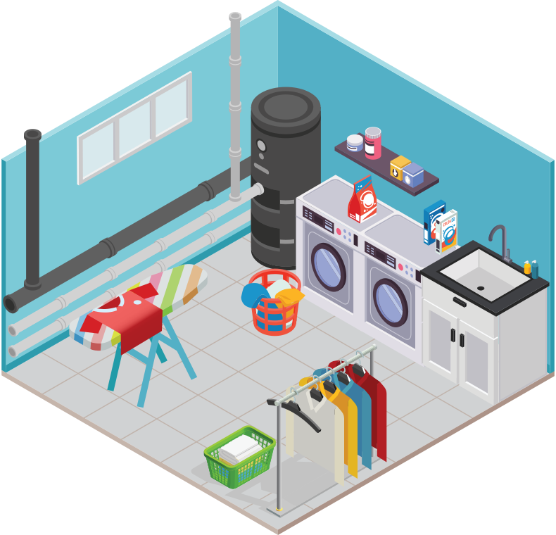
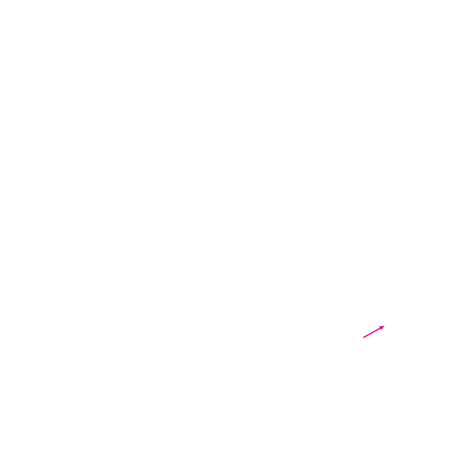
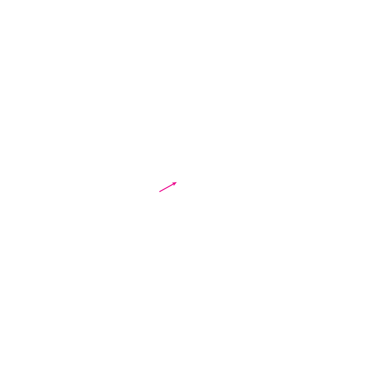
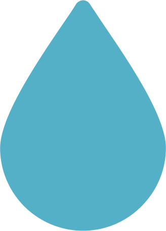

In The LAUNDRY



- UNDER THE SINK: Check for pooling water under pipe connections.
- CLOTHES WASHER: Check for pooling water, which could indicate a supply line leak.
- WATER HEATER: Check beneath the tank for pooling water, rust, or other signs of leakage.